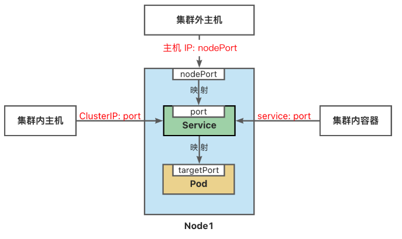

Service(服务)
Service 将运行在一组 Pods 上的应用程序公开为网络服务的抽象方法。 Service 为一组 Pod 提供相同的 DNS 名，并且在它们之间进行负载均衡。 Kubernetes 为 Pod 提供分配了 IP 地址，但 IP 地址可能会发生变化。 集群内的容器可以通过 service 名称访问服务，而不需要担心 Pod 的 IP 发生变化。
Kubernetes Service 定义了这样一种抽象： 逻辑上的一组可以互相替换的 Pod，通常称为微服务。 Service 对应的 Pod 集合通常是通过选择算符来确定的。 举个例子，在一个 Service 中运行了 3 个 nginx 的副本。这些副本是可互换的，我们不需要关心它们调用了哪个 nginx，也不需要关注 Pod 的运行状态，只需要调用这个服务就可以了。
# 查看所有
$ kubectl get all
NAME READY STATUS RESTARTS AGE
pod/nginx-deploy-5964889c54-fkd8t 1/1 Running 0 8m37s
pod/nginx-deploy-5964889c54-lnd79 1/1 Running 0 8m36s
pod/nginx-deploy-5964889c54-tfdf7 1/1 Running 0 8m34s
NAME TYPE CLUSTER-IP EXTERNAL-IP PORT(S) AGE
service/kubernetes ClusterIP 10.43.0.1 <none> 443/TCP 4d12h
NAME READY UP-TO-DATE AVAILABLE AGE
deployment.apps/nginx-deploy 3/3 3 3 66m
NAME DESIRED CURRENT READY AGE
replicaset.apps/nginx-deploy-5964889c54 3 3 3 66m
replicaset.apps/nginx-deploy-7c88b8c7c9 0 0 0 29m
# 映射 pod 容器端口到服务器端口
$ kubectl expose deploy/nginx-deploy --name=nginx-service --port=8080 --target-port=80
service/nginx-service exposed
# 查看service
$ kubectl get service
NAME TYPE CLUSTER-IP EXTERNAL-IP PORT(S) AGE
kubernetes ClusterIP 10.43.0.1 <none> 443/TCP 4d12h
nginx-service ClusterIP 10.43.146.225 <none> 8080/TCP 61s
# 通过ip访问对应端口
$ wget -qO- http://10.43.146.225:8080
<!DOCTYPE html>
<html>
<head>
<title>Welcome to nginx!</title>
<style>
html { color-scheme: light dark; }
body { width: 35em; margin: 0 auto;
font-family: Tahoma, Verdana, Arial, sans-serif; }
</style>
</head>
<body>
<h1>Welcome to nginx!</h1>
<p>If you see this page, the nginx web server is successfully installed and
working. Further configuration is required.</p>
<p>For online documentation and support please refer to
<a href="http://nginx.org/">nginx.org</a>.<br/>
Commercial support is available at
<a href="http://nginx.com/">nginx.com</a>.</p>
<p><em>Thank you for using nginx.</em></p>
</body>
</html>
- 集群内部可以通过 service 名称+ 端口访问
# 创建一次性的内部pod 来测试
$ kubectl run test -ti --image=nginx:1.22 --rm -- bash
If you don't see a command prompt, try pressing enter.
# 测试访问内部
root@test:/# curl nginx-service:8080
<!DOCTYPE html>
<html>
<head>
<title>Welcome to nginx!</title>
<style>
html { color-scheme: light dark; }
body { width: 35em; margin: 0 auto;
font-family: Tahoma, Verdana, Arial, sans-serif; }
</style>
</head>
<body>
<h1>Welcome to nginx!</h1>
<p>If you see this page, the nginx web server is successfully installed and
working. Further configuration is required.</p>
<p>For online documentation and support please refer to
<a href="http://nginx.org/">nginx.org</a>.<br/>
Commercial support is available at
<a href="http://nginx.com/">nginx.com</a>.</p>
<p><em>Thank you for using nginx.</em></p>
</body>
</html>
- 查看 service 信息
# 可以看到对应IP 和 后端端点
$ kubectl describe service nginx-service
Name: nginx-service
Namespace: default
Labels: app=nginx-deploy
Annotations: <none>
Selector: app=nginx-deploy
Type: ClusterIP
IP Family Policy: SingleStack
IP Families: IPv4
IP: 10.43.146.225
IPs: 10.43.146.225
Port: <unset> 8080/TCP
TargetPort: 80/TCP
Endpoints: 10.42.0.8:80,10.42.1.10:80,10.42.2.9:80
Session Affinity: None
Events: <none>
# 获取pod信息
$ kubectl get pod
NAME READY STATUS RESTARTS AGE
nginx-deploy-5964889c54-fkd8t 1/1 Running 0 23m
nginx-deploy-5964889c54-lnd79 1/1 Running 0 23m
nginx-deploy-5964889c54-tfdf7 1/1 Running 0 23m
# 进入其中一个pod 并将首页改为 hello
$ kubectl exec -ti nginx-deploy-5964889c54-tfdf7 -- bash
root@nginx-deploy-5964889c54-tfdf7:/# cd /usr/share/nginx/html/
root@nginx-deploy-5964889c54-tfdf7:/usr/share/nginx/html# echo hello > index.html
退出后多访问几次 会出现 hello, 可见其采用了负载均衡技术
$ wget -qO- http://10.43.146.225:8080
hello
创建 Service 对象
想从集群外部访问服务就需要定义 service 类型
ServiceType 取值
- ClusterIP：将服务公开在集群内部。kubernetes 会给服务分配一个集群内部的 IP，集群内的所有主机都可以通过这个 Cluster-IP 访问服务。集群内部的 Pod 可以通过 service 名称访问服务。如果不指定 ServiceType，其为莫仍类型
- NodePort：通过每个节点的主机 IP 和静态端口（NodePort）暴露服务。 集群的外部主机可以使用节点 IP 和 NodePort 访问服务。
$ 暴露一个外部端口的服务
$ kubectl expose deploy/nginx-deploy --name=nginx-outside --type=NodePort --port=8081 --target-port=80
service/nginx-outside exposed
/ # kubectl get service
NAME TYPE CLUSTER-IP EXTERNAL-IP PORT(S) AGE
kubernetes ClusterIP 10.43.0.1 <none> 443/TCP 4d13h
nginx-service ClusterIP 10.43.146.225 <none> 8080/TCP 18m
nginx-outside NodePort 10.43.4.121 <none> 8081:32555/TCP 9s
# 通过节点ip访问
$ curl 172.25.0.2:32555
hello
$ curl 172.25.0.2:32555
<!DOCTYPE html>
<html>
<head>
<title>Welcome to nginx!</title>
<style>
html { color-scheme: light dark; }
body { width: 35em; margin: 0 auto;
font-family: Tahoma, Verdana, Arial, sans-serif; }
</style>
</head>
<body>
<h1>Welcome to nginx!</h1>
<p>If you see this page, the nginx web server is successfully installed and
working. Further configuration is required.</p>
<p>For online documentation and support please refer to
<a href="http://nginx.org/">nginx.org</a>.<br/>
Commercial support is available at
<a href="http://nginx.com/">nginx.com</a>.</p>
<p><em>Thank you for using nginx.</em></p>
</body>
</html>
- ExternalName：将集群外部的网络引入集群内部。
- LoadBalancer：使用云提供商的负载均衡器向外部暴露服务。
访问 Service
前面 NodePort 访问主机：172.25.0.2:32555
1.NodePort端口是随机的，范围为:30000-32767。
2.集群中每一个主机节点的NodePort端口都可以访问。
3.如果需要指定端口，不想随机产生，需要使用配置文件来声明。

参考文档：
https://kubernetes.io/zh-cn/docs/concepts/services-networking/service/
https://kubernetes.io/zh-cn/docs/tutorials/stateless-application/expose-external-ip-address/